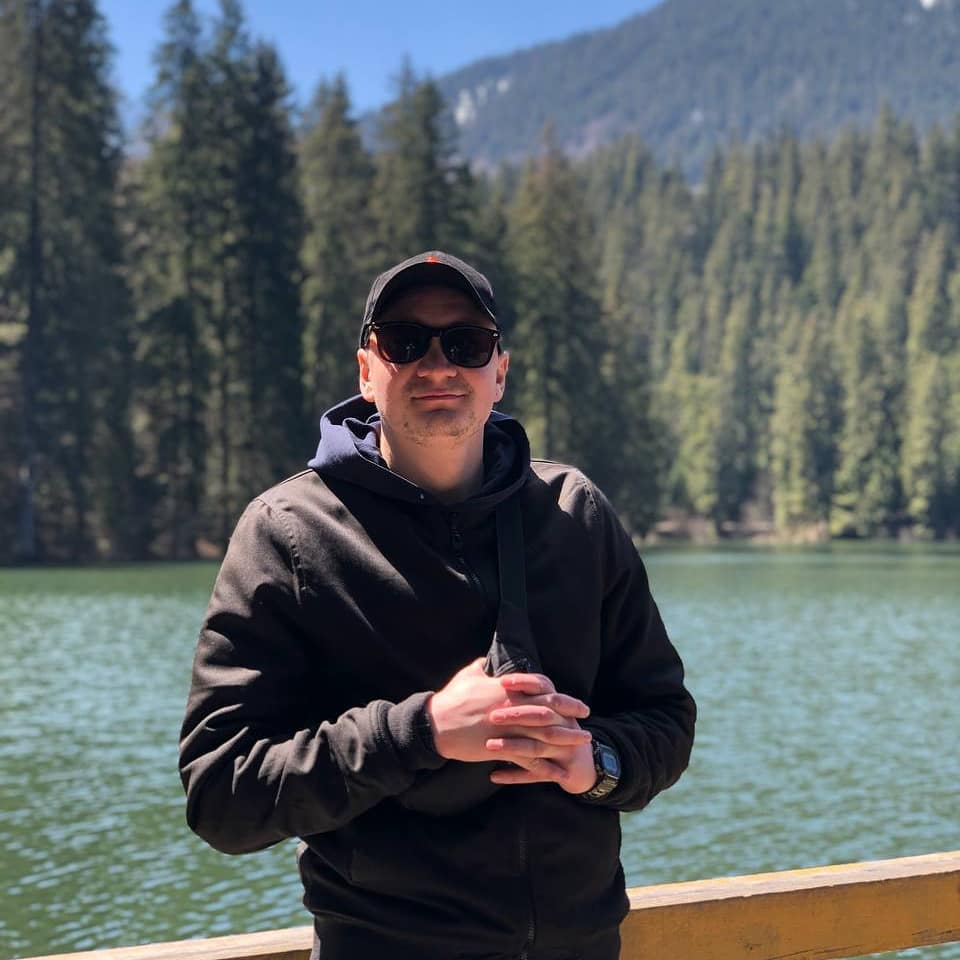

Usik Andriy
Digital marketer / Digital PM
City: LvivDate of birth: June 28, 1992
Education:
Date of graduation: 2016
Ivan Franko National University of Lviv,
Faculty of Electronics and computer
technologies, Department «Semiconductor
Physics», Direction «Systematic design»
Professional skills:
- Contextual advertising Google Adwords, Google Merchant Center. Google AdWords Certificates, Google Analytics.
- Designing, supporting and optimizing campaigns on Google AdWords content networks. Experience with Adwords Editor and Facebook Ads Manager, GA, GTM. Work with different types of campaigns: search, KMM, remarketing
- Website traffic analytics (Google Analytics, Serpstat, etc.), increasing conversions, analyzing the effectiveness of marketing activities, reporting on results;
- SEO: Analysis and selection of donors, ordering external links, internal optimization, position monitoring, compiling the semantic core, analysis of competitors, optimization of site pages, in accordance with the Google recommendations (PageSpeed, Search Console, etc).
- Usability: introduction of new ideas, development of prototypes, assembly of technical specifications for programmers, testing of new functionality
- SMM (setting tasks and manager supervision): defining the concept of community, forming goals and objectives, choosing social networks, working with brand reputation and analyzing competitors. Attracting traffic and customers on social networks such as Facebook, Instagram. Targeted advertising.
- Technical skills: experience in website development, site administration, professional in HTML / CSS. Experience on Wordpress CMS tasks.
- Working with graphic editors (Photoshop, CorelDRAW etc.).
- Project management - systematic work on projects, maintenance and periodic reporting on completed tasks and results on KPI
Language:
English, Russian, Ukrainian
Experience
11.2017 – present
PNG.studio – Printing & design agency
Digital marketer, co-owner
- Development of the company's website. Filling the company's website with divert content. Placing a business point on Google Maps and its optimization
- Contextual advertising Google Ads (setting up, launching and optimizing advertising campaigns)
- Traffic analytics via Google Analytics and estimation of conversion value, total control and improvement of RC. Goal setting and analysis of Google Analytics data. Performance tracking of RC.
- Strategy planning for company development, marketing activities, cooperation with vendors.
- Tracking of budget / marketing activities/ project KPI’s.
- SMM. Content creation and setting target advertising in Facebook and Instagram.
07.2017 – present
Digital marketer / Digital PM
Freelance projects
- Launch and support of marketing projects. Creating a strategy to promote the company via the Internet.
- Site analysis (testing for readiness for impressions and usability).
- Setting a task for website development. Setting tasks for web-developer, copywriter, designer. Analysis of existing websites with further recommendations for implementation of changes.
- Marketing budget planning and optimization.
- Setting up contextual advertising, AdWords, CMS, RSY, LCD optimization, performance analytics. Organization of account structure (setting keywords into semantic groups and their distribution by campaigns and ad groups), creation of ads, setting up the necessary extensions, setting up and launching remarketing.
- Analysis of the audience, market research, creation of promotion strategies and calculation of the project cost.
02.2017 - 07.2017
Digital marketing coordinator
TPF Ukraine
- Launching, maintaining, analyzing and optimizing advertising campaigns on search and social networks: Google AdWords, Yandex Direct + RSYa, as well as setting up remarketing and retargeting.
- Website traffic analysis through Google Analytics and conversion cost estimation, continuous monitoring and improvement of RC. Setting goals and analyzing the data obtained in Google Analytics and Yandex Metrics to assess the effectiveness of marketing activity and usability of the website / landing pages;
- Optimization of advertising activity to attract the maximum number of target leads, reduce the cost of the lead, increase sales (adjust bids and keywords, change ads, connect banner, mobile advertising, remarketing, etc.);
- Development of a strategy to promote the company through social networks.
- Control over the development (setting the term of references) and improvement of the company's website. Coordination of company's sites developers’ team, teams of designers and copywriters, production of technical specifications.
- Negotiating on behalf of the company with contractors, organization and control of tasks.
- Preparation and implementation of comprehensive measures to attract traffic: organic, context, social networks, email, sms.
- Development of POS materials together with a team of marketers.
06.2016 - 02.2017 (8 months)
Digital Marketer Assistant
Global Development
- SMM manager, strategy development for social media promotion for a development (construction) company, community management.
- Development and setting tasks for the development of websites (Landing pages) about Residential Complex, control over the technical task implementation.
- Email-marketing (database collection, trigger setting, A / B testing, design and layout of newsletters) (got certificate from “Send Expert” platform).
- Implementation of call tracking systems.
- Development of marketing strategies.
- Setting of the technical task and targets for development of CRM (ERP) for management of corporation assets. Negotiating on behalf of the company with contractors, organization and control of the tasks.